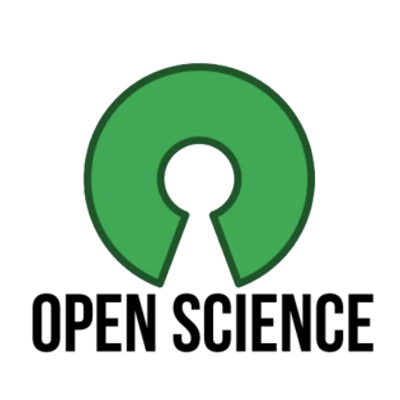

Back in May of this year, some of the other computer science professors and I put together a proposal for a workshop. The workshop would be in conjunction with the December 2016 IEEE BigData Conference, and would focus specifically on the intersection of big data and open science.
In June, we got the good news: it was accepted!
What is “Open Science”?
I’ve been interested in open science since I started graduate school. I’d been using Apache projects since college, learning how to set up and configure my own LAMP stack (yes, I’ll admit I dabbled in PHP for a few years, but I’m clean now!), but had never really contributed to an open source project until the 2010 Google Summer of Code. During that time, I worked on adding spectral clustering the Apache Mahout library.
While open source is great and wonderful, this is just one component of Open Science. It’s another reason I’m incredibly excited about the “container revolution”: Docker and its ilk. This concept makes entire pipelines perfectly reproducible, to the point where it’s now possible for entire scientific projects to be replicated with a single command: from running the analysis, to building the figures, to assembling the final PDF file (which, by the way, can be uploaded to arXiv for everyone to read!)
These other aspects–open sourcing data, reproducibility scripts, and entire pipelines–are veritable educational and research gold mines, but are arguably much more difficult than simply dumping some code on GitHub. These difficulties are only exacerbated in the realm of “big data”.
What are the goals of the workshop?
The goals of the workshop are threefold.
First: we aim to identify some of the biggest challenges in democratizing big data analytics. Open Science is a critical component of both educational pedagogy and scientific research. With the increasing relevance of big data analytics, making these tools and resources available to the next generation of scientists and big data practitioners is crucial. Unfortunately, this is also extremely challenging.
Second: we aim to bring together big data practitioners from multiple backgrounds to discuss and establish the current state of affairs with respect to reproducibility in big data analytics and machine learning. Priorities change and constraints differ between researchers and developers in academia versus industry versus government; nonetheless, open science and big data are important to practitioners in each of these areas.
Third: we aim to examine and propose possible routes forward to advance the continued integration of open science in big data analytics, putting tools, techniques, data, and documentation in the hands of researchers, students, and other big data practitioners. We will identify emerging trends in terms of open science best practices, and how these can be incorporated into current big data endeavors.
What kinds of proceedings is the workshop accepting?
We hope to have two tracks: a full research paper session, and a student (short) paper session.
Papers submitted to the OSBD workshop should, at the very minimum, have a significant Open Science component. This can take several forms, including but not limited to any combination of the following:
- Uses free and open source packages
- Openly available online, e.g. GitHub
- Scripts are available to reproduce figures
- Data are openly available e.g. dat, datahub.io
- etc.
We are welcoming of original research into big data analytics, so long as there is an open science component.
Furthermore, in the spirit of Open Science and reproducibility, we strongly encourage our presenters to incorporate live code demos, data walkthroughs, or some other hands-on activity into their talks.
When is the submission deadline?
The deadline for workshop paper submissions is Sunday, October 25, 2016. This provides a 2-week buffer zone between the notification deadline of the main IEEE BigData conference, in case you want to repackage your conference submission for the workshop.
Where can one find more information about OSBD?
We have a website: https://osbd.github.io/
The website contains information about the topics around the workshop, the invited speakers who will be attending (keynote and panelists), the important dates around the workshop, and the instructions for formatting and submitting your paper to the workshop.
We are very excited about this workshop, and encourage you to submit! We look forward to seeing you in December!

- Shannon Quinn, Co-chair
- John Miller, Co-chair
- Suchi Bhandarkar, Co-chair
- Yi Hong, Co-chair